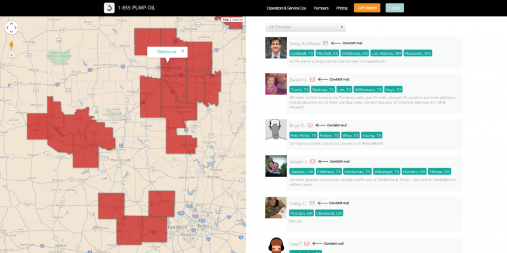

Operator: Unchained
First published in E&P Magazine. Lightly updated for 2026. The directory it describes went by the Pumper Mesh back then. It is the Pumper Directory today, and it is still free.

For nearly two decades the industry has chased the digital oil field: replace the human element with sensors and SCADA systems. Most independent operators have stayed on the sidelines. Why? Not only are these field automation systems cost-prohibitive for the small and midsized independent, they also require a high level of expertise to design and deploy.
Even the operators who managed to roll them out, with high hopes of replacing people with machines, quickly found themselves saddled with a new set of problems. Gummed-up tank sticks, faulty sensors and the expense of radio and cellular modems are enough to make any independent suspect of the whole idea.
It is a bold notion, but maybe the digital oil field is not the messiah it has been touted to be. Even the largest operators who successfully automated the collection of their production information now struggle with the sheer rate of incoming data. They must consume it, filter it, process it, run models, perform analysis and recommend action to decision makers. And they must do it all in real time.
So where does technology belong in a small or midsized operation? Among backyard astronomers there is a well-known trick called averted vision. You can only see the faintest stars by looking at the empty space next to them.
Is it possible that independent operators find their answer by looking away from the digital oil field? The intriguing part is that the answer relies more heavily on people than ever before.
There is significant unused value in wasted time. Most of us carry unused capacity through the course of a day. In the oil field that idle capacity has a face: roustabouting, relief pumping and simply driving by to spot-check a battery of tanks.
Emmet is a 70-year-old pumper who lives in Chandler, Okla. He has a lifetime of experience in the oil field, and he put it plainly: “There are two things that’ll eat you up as a pumper: gas and truck expenses.”
Emmet is choosy about his wells, and after more than 50 years of service to the oil field he has earned the right to be. To do his best work he limits the number of leases he takes on, and to keep his fuel bill down he keeps his wells as tightly knit as he can. Even so, he drives past dozens of wells he is not contracted on every day, and he says it is still not uncommon to spend more than $1,000 a month on gas.
Unused value is wasted value. In the oil field it is the time that services and human talent sit idle, or could be repositioned and better allocated somewhere else. That idle time is exactly what the Pumper Directory is built around.
By letting operating companies sort pumpers by state and county, the directory lets lease operators pump wells concentrated in one or two counties. That saves gas and raises the number of wells a pumper can look after in a day.
Ideally, the directory builds community. Plenty of folks call it a return to simpler times, when a community looked out for its own.
With the industry’s ups and downs, it has never been known for loyalty to the people who work with their hands in the field. Every downturn drives a mass exodus of talent and knowledge out of the oil patch. Until now, nobody has looked out for these folks. That is what this project does: it forms a semblance of community between the operator and the pumper. Everyone wins.
The applications are wide open. In much the same way a doctor only makes a house call when a patient is sick, electricians and field personnel could work on a roaming basis, arriving (and getting paid) only when a well has a problem. That works for contract pumpers and company pumpers alike. Contract pumpers get access to new wells. Companies can farm out their existing pumpers, and they can easily find someone to check on the orphan wells that fall outside their normal operating area.
For now, small and midsized operators are glad to know they have options: field personnel who not only work close to the company’s production assets, but can deliver that operator’s production information in near-real time.
There are real advantages to digital equipment and monitoring. It is also true that those devices need monitoring themselves. The human factor cannot be removed from the oil field. What it can be is equipped, with modern tools that let a pumper and an operator find each other with no added overhead.
Is a directory of pumpers the miracle that will solve the oil industry’s problems? It most certainly is not. The price of oil will still swing outside the independent operator’s control. But can putting the right pumper on the right route raise a company’s chances of getting every barrel its wells will give? It most certainly can.
Operators: the Pumper Directory is free and sorted by county. Find a pumper near your leases →
Pumpers: get listed where operators are looking. Put yourself in the directory →